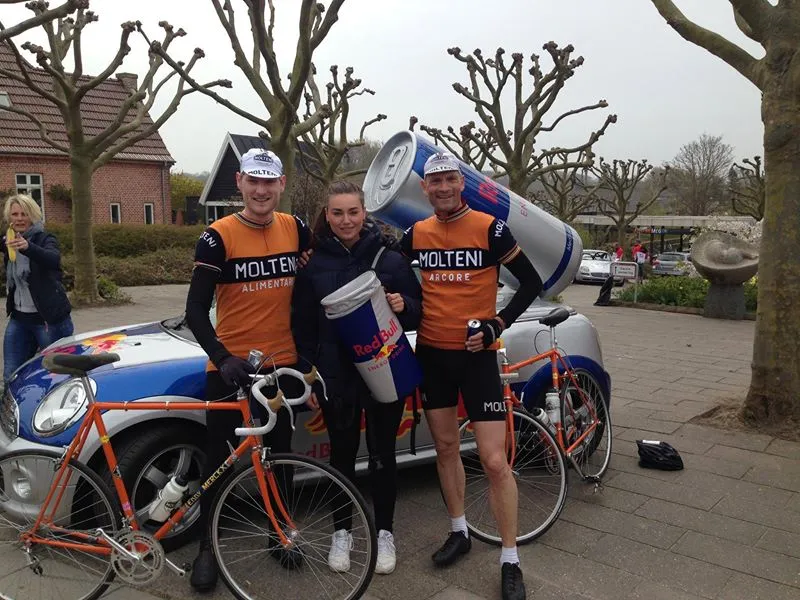

OPTAKT: Nordfyn Rundt 2018

Efter flere år med top-10 placeringer, er Squadra Molteni klar til at rydde podiet ved forårsklassikeren Nordfyn Rundt.
Ja, det er rigtigt, at vi har haft lidt udfordringer de sidste 3-4 år ved Nordfyn Rundt: Vi har været udsat for styrt. Løjtnant Sørensen er mødt bagstiv op – og kun 22 sekunder før start. Og sidste år smuttede løjtnanten og vores sprinter Grane Maaløe på bagerstop midt under løbet. Men ikke desto mindre har vi alle år været med til at præge løbet og kørt top-10 placeringer hjem, fortæller Kaptajn Bjørnsteen.
Tidligere år
I 2015-udgaven var Bjørnsteen og Sørensen med helt fremme i førergruppen under hele løbet. Det blev til henholdsvis en 6. og en 9. plads.
2016-udgaven var kold, blæsende og regnfuldt. Løjtnant Sørensen og Kaptajn Bjørnsteen fik kæmpet sig til henholdsvis en 7. og 9. plads.
2017-udgaven blev det til en 9. plads til Kaptajnen og en 12. plads til Eigil Leegaard.
Der er ingen tvivl om, at Squadra Molteni et kendt og berygtet ved den nordfynske klassiker. Holdet er kendt for præge løbet – både med TV-udbrud lige efter start, skiltespurter midvejs og afgørende ryk i finalen.


I år et der kun ét mål: Vi rydder podiet. Vi sender Kaptajn Bjørnsteen, Løjtnant Sørensen og måske bjergrytter Eigil Leegaard, der er ved at være 115% efter en skulderoperation, afsted til forårsklassikeren Nordfyn Rundt. Der er vigtige UCI-point at hente – og de har også en date med et par Red Bull-piger, lyder det fra Squadra Molteni HQ.
Vi har selvfølgelig ikke ændret taktikken. Vi kører som vi plejer; stikker i højre og venstre … men i år har løjtnant Sørensen lovet at møde til tiden, ædru og uden cykelhjelm ved indskrivningen…
Nordfyn Rund køres lørdag 28. april – og har start og mål i Bogense. Løbet sendes direkte på TV2 Play fra kl. 09.30